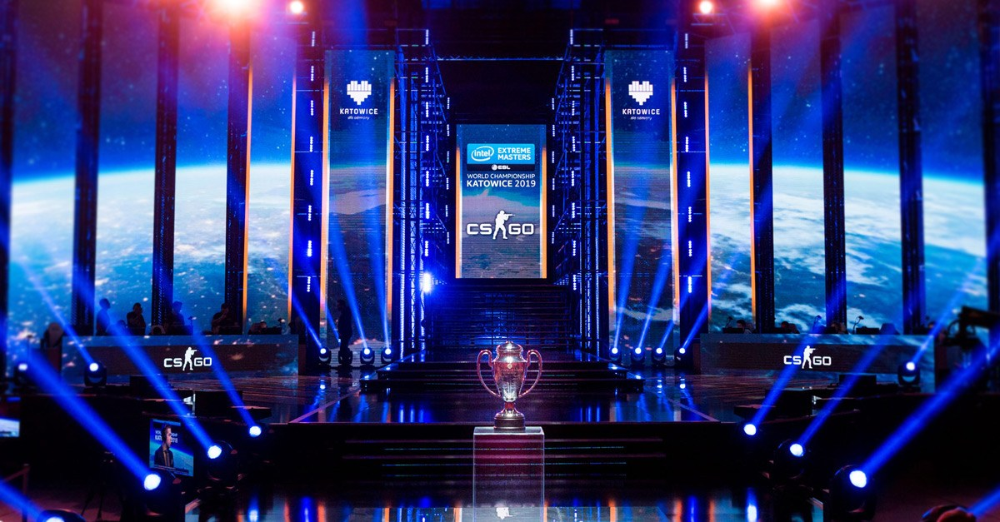

2019.01.14
Начиная с 16 января с открытием малых региональных турниров СНГ и стран ЕС командам предоставляется последний шанс попасть на мейджор-турнир IEM Katowice 2019. Две лучшие команды из Европы, СНГ, стран Америки и Азии станут новыми претендентами на турнире IEM Katowice.
По окончании малых турниров четыре команды, занявшие третье место в каждой из соответствующих сеток, столкнутся лицом к лицу в дополнительных матчах за шанс стать двумя новыми претендентами. Смотрите матчи в прямом эфире на Twitch организации ESL здесь и здесь
Полное расписание малых региональных турниров:
СНГ: 16–20 января Европа: 16–20 января Америка: 22–26 января Азия: 22–26 января Дополнительные матчи: 27 января
Подробную информацию о малых турнирах, включая изменения формата и дополнительные матчи, можно найти в блоге IEM.
UNIQUE PLAYERS LAST MONTH